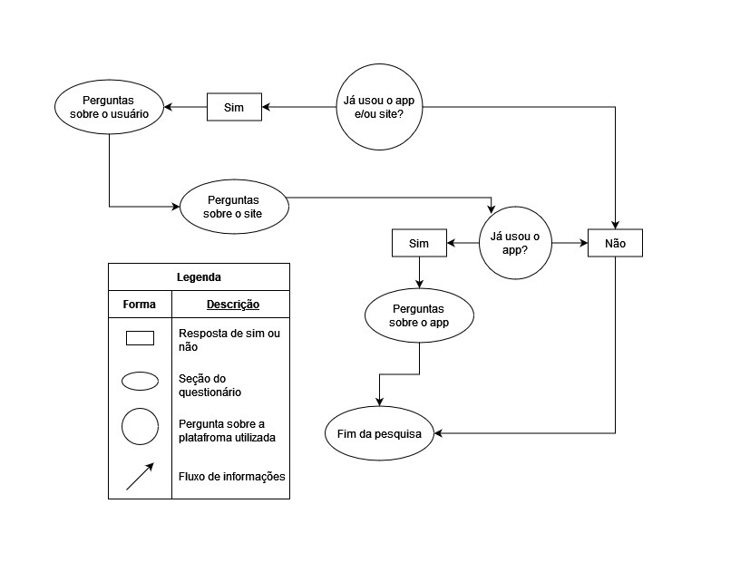

Questionário
Introdução
O uso de questionários online está entre as técnicas mais usadas para coleta de dados de usuários, devido a realização remota, em que o participante escolhe o momento que lhe for mais favorável para responder, e a possibilidade de investigar usuários que residem além do local de formulação do próprio questionário, ele pode ser composto por uma mesclagem de perguntas abertas - em que os usuários emitem sua opinião de forma mais livre - e fechadas - onde o usuário possui uma quantidade limitada de opções pré-definidas para escolher como resposta - que podem ser feitas para um grande volume de participantes (Barbosa et al. , 2021, páginas 149 a 151).
Metodologia
O questionário elaborado foi enviado em grupos de telegram e whatsapp, com destaque para os grupos de alunos do campus da Faculdade do Gama (FGA) pelo o seu grande número de usuários. O período de aceitação de respostas para o questionário foi do dia 12/04/2024 ao 16/04/2024, porém, apenas 26 respostas foram coletadas e dentre estas, apenas 23 concordaram com o termo de consentimento e realizaram a pesquisa. O questionário começa com a apresentação do grupo e objetivo do mesmo, logo em seguida, é apresentado o termo de consentimento, caso o participante esolha a opção de não aceitá-lo, a página seguinte será a de encerramento da pesquisa, caso contrário, o usuário seguirá o fluxo presente na figura 1.
O questionáiro usado também foi aproveitado para o projeto deste grupo na disciplina de Interação Humano Computador, portanto, aqui serão apresentados apenas os dados do questionário que pertencem à discplina de Requisitos de Software.
Figura 01 - Fluxo de seções do questionário.

Fonte: Gabriel F. J. Silva, 2024
Perguntas/Respostas
Pergunta 1
Figura 02 - Gráfico pergunta 1 do questionário.

Fonte: Gabriel B. Bertolazi, 2024
Pergunta 2
Figura 03 - Gráfico pergunta 2 do questionário.

Fonte: Gabriel B. Bertolazi, 2024
Pergunta 3
Figura 04 - Gráfico pergunta 3 do questionário.

Fonte: Gabriel B. Bertolazi, 2024
Pergunta 4
Figura 05 - Gráfico pergunta 4 do questionário.

Fonte: Gabriel B. Bertolazi, 2024
Pergunta 5
Figura 06 - Gráfico pergunta 5 do questionário.

Fonte: Gabriel B. Bertolazi, 2024
Pergunta 6
Figura 07 - Gráfico pergunta 6 do questionário.

Fonte: Gabriel B. Bertolazi, 2024
Pergunta 7
Figura 08 - Gráfico pergunta 7 do questionário.

Fonte: Gabriel B. Bertolazi, 2024
Pergunta 8
Figura 09 - Gráfico pergunta 8 do questionário.

Fonte: Gabriel B. Bertolazi, 2024
Pergunta 9
Figura 10 - Gráfico pergunta 9i do questionário.

Fonte: Gabriel B. Bertolazi, 2024
Pergunta 10
Figura 11 - Gráfico pergunta 10 do questionário.

Fonte: Gabriel B. Bertolazi, 2024
Resultados
Pela imagem 01 e 02 percebemos que 60.9% dos entrevistados usam o sistema e em sua maioria (exatamenete 92.9%) dos usuários utilizam o aplicativo de forma ocasional, nossa pesquisa também nos mostrou que nenhum usuário acessa o aplicativo diariamente ou semanalmente, ou seja, os outros 7.1% dos usuários acessa mensalmente. Pela imagem 3 percebemos que ninguém usa o aplicativo do correio para compra de produtos nas lojas, nem para adiquirir produtos na loja do correios. Percebemos também que 100% dos usuários utilizam a função de rastrear encomendas. e que apenas 7.1% dos entrevistados utilizam as outras funções mencionadas na pesquisa. Além disso nas outras figuras percebemos que a insatisfação em todas as funcionalidades menos na de status da encomenda são insatisfatórios.
Requisitos Elicitados
Tanto para os requisitos funcionais, Tabela 01, quanto para os requisitos não-funcionais, Tabela 02, estão disponíveis tabs que permitem visualizar a evolução dos requisitos em suas diferentes versões.
Legenda Requisitos das tabelas:
- RFx: Requisito Funcional.
- RNFx: Requisito Não-Funcional.
- Qx: Requisito nºx elicitado pelo questionário.
Funcionais
Tabela 1 - Requisitos funcionais.
| ID | Descrição | Tipo | Implementado | Versão |
|---|---|---|---|---|
| Q01 | As informçãoes na página de reastreio | RF | Sim | 1.0 |
| Q02 | Filtrar o tipo de encomenda pelo tipo de entrega | RF | Não | 1.0 |
| Q03 | Assistente virtual dos correios | RF | Não | 1.0 |
| Q04 | Chat para se comunicar diretamente com o fornecedor | RF | Não | 1.0 |
| Q05 | Chat para se comunicar diretamente com o entregador | RF | Não | 1.0 |
| Q06 | Pagamento de tributos e taxas de importação | RF | Não | 1.0 |
Fonte: Gabriel B. Bertolazi, 2024
Tabela 3 - Requisitos funcionais.
| ID | Descrição | Tipo | Implementado | Versão |
|---|---|---|---|---|
| Q01 | As informçãoes das entregas ativas e completas na página de reastreio | RF | Sim | 1.1 |
| Q03 | Assistente virtual dos correios para judar a executar tarefas e achar opções muitas vezes de difícil acesso pelo site. | RF | Não | 1.1 |
| Q04 | Ter um chat para se comunicar diretamente com o fornecedor, e consiga ter as informações básicas do mesmo. | RF | Não | 1.1 |
| Q05 | Ter um chat para se comunicar diretamente com o entregador, e consiga ter as informações dos mesmos. | RF | Não | 1.1 |
| Q06 | Poder fazer os pagamentos pagamento de tributos e taxas de importação em uma página própria para essa finalidade. | RF | Não | 1.1 |
Fonte: Gabriel B. Bertolazi, 2024
Não-funcionais
Tabela 2 - Requisitos não funcionais.
| ID | Descrição | Tipo | Implementado | Versão |
|---|---|---|---|---|
| Q07 | A opção de filtrar encomendas deve ser de fácil acesso (até 2 frames de ajuda a partir da página de encomendas) | RNF | Sim | 1.0 |
| Q08 | O aplicativo deve notificar o usuário com eficácia (deve enviar uma notificação 100% das vezes em que houver uma atualização sobre qualquer encomenda) | RFN | Não | 1.0 |
| Q09 | As informações sobre o rastreio de encomendas devem ser precisas (fornecem data, hora e local em cada atualização da encomenda) | RNF | Sim | 1.0 |
| Q10 | O usuário deve estar satisfeito com a aplicação (Caso seja solicitado, mais de 70% dos usuários devem atribuir uma nota igual ou maior que 3 - em uma escala de 1 a 5 - ao recomendar o aplicativo dos Correios a um amigo) | RNF | Não | 1.0 |
| Q11 | A opção de rastrear encomendas deve ser de fácil acesso (deve estar na página principal e o usuário não deve demorar mais de 2 minutos para achá-la) | RNF | Não | 1.0 |
| Q12 | O chat com o entregador deve ser confiável (as mensagens devem ser arquivadas por um período de até 1 ano) | RNF | Não | 1.0 |
Fonte: Gabriel F. J. Silva, 2024
Tabela 4 - Requisitos não funcionais.
| ID | Descrição | Tipo | Implementado | Versão |
|---|---|---|---|---|
| Q08 | O aplicativo deve notificar o usuário com eficácia (deve haver um sistema de redundância, para que a mesma notificação seja enviada por diferentes meios - SMS, email, Whatsapp e notificação pelo aplicativo -, de acordo com a preferência do usuário) | RFN | Não | 1.1 |
| Q12 | O chat com o entregador deve ser protegido de acessos indevidos (de acordo com as especificações de segurança do Art. 46 da LGPD) por meio de criptografia AES-256 | RNF | Não | 1.1 |
Fonte: Gabriel F. J. Silva, 2024
Referências Bibliograficas
Barbosa, S. D. J.; Silva, B. S. da; Silveira, M. S.; Gasparini, I.; Darin, T.; Barbosa, G. D. J. (2021) Interação Humano-Computador e Experiência do usuário. Autopublicação. ISBN: 978-65-00-19677-1.
BRASIL. Lei n. 13.709, de 14 de agosto de 2018. Lei Geral de Proteção de Dados Pessoais (LGPD). Diário Oficial da União, Brasília, DF, 15 ago. 2018. Art. 46. Disponível em: http://www.planalto.gov.br/ccivil_03/_ato2015-2018/2018/lei/L13709.htm. Acesso em: 23 de junho de 2024
Bibliografia
- Sommerville, Ian. Engenharia de software, Edição 9. Editora Pearson Prentice Hall, 2011. Disponível em: https://www.facom.ufu.br/~william/Disciplinas%202018-2/BSI-GSI030-EngenhariaSoftware/Livro/engenhariaSoftwareSommerville.pdf. Acesso em: 16 de Abril de 2024
- Grupo 01 de Requisitos de Software 2023.1. Projeto do aplicativo Bilheteria Digital. Disponível em : https://requisitos-de-software.github.io/2023.1-BilheteriaDigital/. Acesso em: 16 de Abril de 2024
Histórico de Versões
| Versão | Data | Descrição | Autor(es) | Revisor(es) |
|---|---|---|---|---|
1.0 |
17/04/2024 | Criação do documento | Gabriel F. J. Silva e Gabriel B. Bertolazi | Danilo Carvalho |
1.1 |
01/05/2024 | Correção do diagrama do questionário e coluna de implementação dos requisitos | Gabriel F. J. Silva | Pablo S. Costa |
1.2 |
23/06/2024 | Correção de requisitos | Gabriel F. J. Silva e Gabriel B. Bertolazi | Ricardo Augusto |